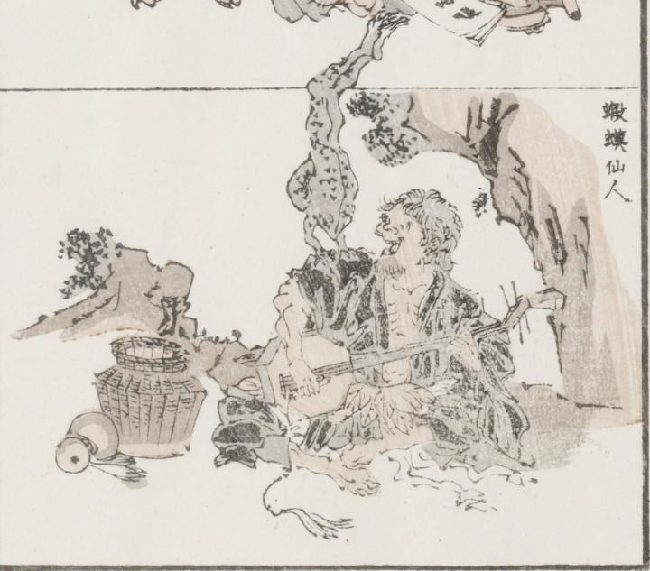

蝦蟇；ガマ，仙人；センニン

ぼさぼさの髪にひげを生やし、黒い着物をだらしなくまとい、木の葉の腰みのを付けた仙人らしき男が、八角形の弦楽器を弾いている。その肩で大きな蛙が逆立ちしている。男の脇にひょうたんと大きな籠が置かれている。
著作者：牧墨僊／出典：親書誌：U426_nichibunken_0097：滑稽洒落狂画苑；コッケイシャレキョウガエン／日付：2007／資源識別子：U426_nichibunken_0097_0009_0000
Copyright (c)2010- International Research Center for Japanese Studies, Kyoto, Japan. All rights reserved.